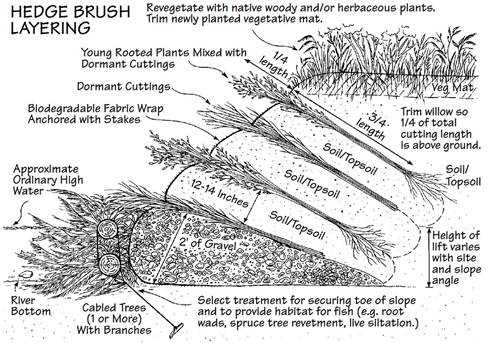

Brush Layering
What is it?
Brush layering is a soil bioengineering technique utilizing a secured bank toe topped with layers of vegetative cuttings and soil fill. This technique is used to stablize eroding banks and restablish bank riparian vegetation. Dormant or live cuttings are used to enhance bank stablization with subsequent root developement and are also efficient in capturing sediment and seed during stormwater runoff. This BMP is most efficient in areas with mass bank slumping and is not suited for highly disturbed or high traffic areas.
 (diagram from Streambank revegetation and protection: a guide for Alaska)
Conservation Benefits
- Minimizes bank erosion
- Promotes establishment of vegetation
- Provides fish and wildlife habitat
- Restablishes functioning riparian area
What does it include?
Brush layering should be designed under the guidence of technical experts and materials should be regionally, watershed, and hydrolically appropriate. The toe of the eroding bank should be initially stablized using a technique lik coir logs, tree revetments, or root wads. Dormant cutting and fill should be selected to promote revegetation and be able to withstand erosive water velocities. Layering of brush/cuttings begins at the toe and is topped with backfill for form successive tiers as the bank is rebuilt. For steeper slopes, a biodegradable fabric can be used to secure the layers of backfill.
Brush Layering Links
- Brush/ hedge layering (p.44; Alaska Dept. Fish and Game)
- Brush layer (p.4; Arizona Department of Environmental Quality)
- Brush layering (NRCS)
- Brush layering (p.23; University of Virginia)
Brush Layering Bibliography
- Bischetti et al. 2010. Quantifying the effect of brush layering on slope stability. Ecological Engineering 36: 258-264.
- Gray and Leiser. 1982. Biotechnical slope protection and erosion contol (book) 271 pp.